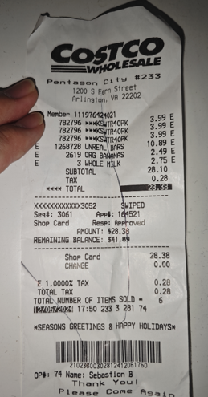

仇镜溪 Jingxi Qiu
PhD Applicant · NLP
Machine Learning
Natural Language Processing
Computer Vision
you@domain.com · your-site.example · GitHub · Google Scholar
研究兴趣 Research Interests
- 主题 A：一句话阐述研究的问题与影响
- 主题 B：一句话阐述研究的问题与影响
- 主题 C：一句话阐述研究的问题与影响
目标导师/实验室匹配点：列 2–3 个。
学术背景 Education
- XX 大学 · 硕士 / 本科 · 专业（年份–年份）— GPA / 排名（可选）
- 交换 / 实训 / 院系荣誉（可选）
科研/实习经历 Experience
- 机构 · 职位（起止）— 方向与成果（可量化的指标）
- 机构 · 职位（起止）— 方向与成果
代表性论文 Publications
精选项目 Projects
项目一 Project A
- 一句话目标与用户/应用场景
- 方法/系统结构亮点（可配图）
- 结果：速度/准确率/用户反馈
Tools - process_receipt
User input
↓
Reasoning
↓
Process Receipt

{
"merchant": "Costco Wholesale",
"time": "12/05/2024 17:50",
"good_list": [
{ "name": "***KSWTR40PK", "price": 3.99 },
{ "name": "***KSWTR40PK", "price": 3.99 },
{ "name": "UNREAL BARS", "price": 10.89 },
{ "name": "ORG BANANAS", "price": 2.49 },
{ "name": "3 WHOLE MILK", "price": 2.75 }
]
}技能 Skills
编程： Python, C/C++, JS/TS, PyTorch, TensorFlow
工具： Linux, Git, Docker, CUDA, LaTeX
语言： 中文（母语），英文（流利）
教学 · 学术服务 · 获奖
- TA/讲师：课程名（学期，职责）
- 审稿：NeurIPS / ICML / ACL（年份）
- 奖学金/竞赛：名称（名次/金额，年份）
博士阶段研究计划
- 短期（1 年）：要解决的具体问题与可交付成果
- 中期（2–3 年）：路线图与关键里程碑
- 长期：学术影响与开放问题
谢谢！Thank You
欢迎联系：you@domain.com
附录 Appendix
# 简短代码高亮示例
import torch
x = torch.randn(2, 3)
print(x.shape)